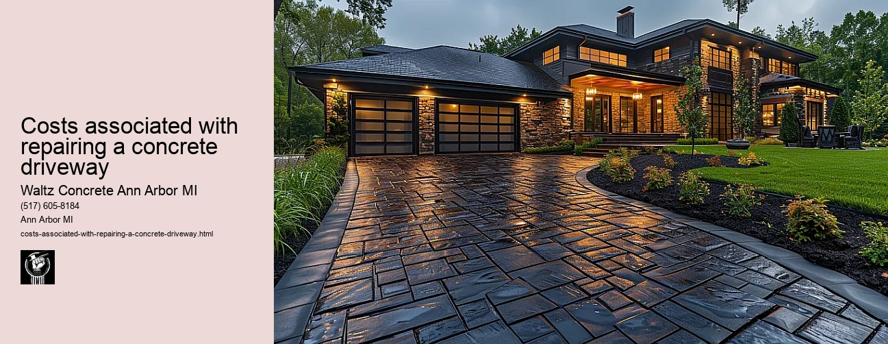

News
Concrete Driveway Installation Ann Arbor Mi
Concrete Driveway Installation Ann Arbor Mi
Choosing the right contractor for installation
Cost of concrete driveway installation in Ann Arbor
Permit requirements for driveway installation in Ann Arbor
The process and timeline of concrete driveway installation
Different types of concrete used in driveways
Maintenance and Repair of Concrete Driveways in Ann Arbor Mi
Maintenance and Repair of Concrete Driveways in Ann Arbor Mi
Preventive maintenance tips for durability
Common causes for concrete driveway damage
Professional companies offering repair services in Ann Arbor
Doityourself versus professional repairs
Costs associated with repairing a concrete driveway
Designs and Styles of Concrete Driveways in Ann Arbor Mi
Designs and Styles of Concrete Driveways in Ann Arbor Mi
Popular design trends for driveways
Considering climate factors when choosing a design or style
Unique customizations available for concrete driveways
Influence of home architecture on driveway design
Stamped stained and decorative options
Environmental Impact of Concrete Driveways in Ann Arbor Mi
Environmental Impact of Concrete Driveways in Ann Arbor Mi
Carbon footprint associated with concrete production
Use of sustainable materials in concrete driveways
Drainage considerations to reduce environmental impact
Local regulations regarding environmentally friendly driveways
Potential use of permeable or porous pavement
Alternatives to Concrete Driveways in Ann Arbor Mi
Alternatives to Concrete Driveways in Ann Arbor Mi
Asphalt driveways and their proscons
Paver stone driveways and their benefitsdrawbacks
Gravel or crushed stone as an alternative option
Comparing costs between different driveway materials
Resinbound surfaces as emerging technology
About Us
Contact Us

Costs associated with repairing a concrete driveway
Costs associated with repairing a concrete driveway
Repairing a concrete driveway is an essential part of home maintenance. The costs associated with this type of repair can be substantial, depending on the extent of the damage. These costs may include materials, labor, and other expenses related to the project.
When it comes to materials necessary for repairing a concrete driveway, the main item needed is new concrete mix. The total cost will largely depend on the size or area of your damaged driveway that needs repair. This could range from small cracks which require less material, to larger areas which may necessitate a significant amount of concrete mix. You also need to consider possible reinforcement materials like rebar or wire mesh if the damage is extensive.
Labor costs are another major component when budgeting for such repairs. If you hire professionals, their service fee will most likely be based on the complexity and size of the job at hand. A simple resurfacing might not take much time and therefore cost less than completely tearing out and replacing an existing driveway, which would involve more man-hours and heavier machinery.
Another factor that often gets overlooked but adds up considerably in some cases are permit fees. Depending on local regulations in your area, you might have to acquire certain permits before starting work on your concrete driveway repair project.
In addition to these direct costs associated with repairing a concrete driveway, there are indirect costs as well that homeowners should be aware of - mainly inconvenience-related ones due to potential disruption in daily routines caused by ongoing construction work.
If large sections of your driveway are being repaired or replaced, you may lose access to parking spaces or even entire sections of your property temporarily until repairs are complete. This might mean having to park vehicles off-site or rearrange outdoor activities around construction schedules for a period of time.
One should also account for potential aesthetic issues following repair works unless resurfacing is done over the entire driveways surface; repaired patches may not exactly match color/texture-wise with old surrounding sections, creating an uneven appearance.
While these costs can seem daunting, it's crucial to remember that repairing a concrete driveway is an investment in the value and functionality of your home. A well-maintained driveway not only improves curb appeal but also prevents more severe structural issues down the line which could necessitate costlier repairs or replacements. Its often advised that homeowners seek multiple estimates from different service providers before committing to any specific contractor so as to ensure they get best value for their money.
In conclusion, while costs associated with repairing a concrete driveway can be substantial - encompassing materials, labor, permits and other indirect expenses - such expenditures are justifiable as routine yet essential aspects of homeownership aimed at preserving both property values and quality of life for residents therein.
Doityourself versus professional repairs
Costs associated with repairing a concrete driveway
Frequently Asked Questions
What is the average cost of repairing a concrete driveway in Ann Arbor, MI?
The average cost to repair a concrete driveway in Ann Arbor can range from $800 up to $2,500 depending on the extent of the damage and other factors such as size and access.
How does the size and condition of the driveway impact repair costs?
The larger and more damaged your driveway, the higher your costs will be. Minor repairs like filling cracks or holes may only cost a few hundred dollars. However, if large sections are damaged or sinking, you might need to replace those sections entirely which could run into thousands of dollars.
Are there additional costs for removing old concrete during a driveway repair in Ann Arbor?
Yes, most contractors charge extra for removal and disposal of old concrete. This can range from $200 - $400 depending on how much needs to be removed.
Can weather conditions affect my concrete driveway repair costs in Ann Arbor?
Yes, weather conditions can influence repair costs. For instance, if repairs need to be done during winter months when temperatures are below freezing, it could increase labor costs due to added difficulty and time taken. Similarly, rainy weather might delay work progress hence increasing overall project timeline and possibly cost.
Costs associated with repairing a concrete driveway